MIT Battlecode 2020 Postmortem
This is my 3rd year competing in Battlecode, having previously competed in team Codelympians in 2018 and 2019 (12th - 9th)
This year, I soloed as team Bowl of Chowder and not gonna lie, this was pretty damn hard to do given that my school started the same day as Battlecode 2020. Credit to my past teammate, Fulgrim (his discord name), for the team name.
But for the love of AI, coding, and Battlecode, I persisted and made it to finals and placed 6th - 5th place! A definite improvement from last year (and hopefully this is strictly increasing). Congratulations to team Java Best Waifu for getting first this year!
In this postmortem, I have included introductions to Battlecode and Battlecode 2020 along with basic spec information about this year's Battlecode. Afterwards I dive into the progression of the competition, how the meta changed and what I worked on and changed with my bot over time. I have also included a basic technical appendix for anyone that wants to learn more in detail about how I made my bot.
Also, here is the GitHub repository to my all my code. In the src folder, Chow10 is my latest working bot. FinalChowBot.zip is a zipped up folder containing the bot I submitted for finals.
Additionally, I'm currently writing an article from a more sentimental perspective of Battlecode in relation to my life to be published some time soon on Medium. To be linked/posted soon.
This is my first postmortem for Battlecode and it is quite detailed and in-depth, so bear with me!
Go here if you want to skip the general intro to battlecode, intro to battlecode 2020, and the specs.
Or TLDR;
Battlecode is about writing an artificial intelligence agent to battle/compete against other team's bots. It's extremely exciting, although sometimes stressful, and I highly recommend this competition (I for sure am going to try and compete in this for as long as I can. Someone suggested to keep staying in PhD programs for the rest of their life just to compete in Battlecode).
1. Introductions
1.1 Intro to Battlecode
Welcome to MIT's longest-running programming competition, Battlecode.

Battlecode is an AI competition lasting around 22 days where you can team up (or solo) and battle other teams by competing your definitely-not-spaghetti-code bot against the other team's definitely-robust-code-and-not-rng bot in a virtual game/platform to then determine a winner. It is developed by teh devs, a great group of students at MIT that run the competition, build the infrastructure and website, post announcements, chat, and answer all your questions on the Battlecode discord. This discord is also one of the best communities out there because everyone is so supportive and helpful. Often times other competitors will help solve your issues whether it is installation of the scaffold, debugging etc.
Every year Battlecode has a different theme and this year it was about soup 🍲
Typically, Battlecode is an actual battle between two bots (like literally, units dropping units into floods, swarming them with drones, but more on that later)
It often involves a complex combination of resource management, offensive and defensive strategy, communication in a decentralized environment, and a ton of bugs... *cough I mean features. Additionally, Battlecode introduces a form of computational limit on your code (sorry you can't run bogosort on a million element array), whether it is through a time limit on how long your bot can execute (Battlecode 2018, 2019), or through bytecode counting ( < Battlecode 2017, and Battlecode 2020). You and your team will likely code in Java as that is currently the only language offered, although this may change in future iterations of Battlecode (Javascript was allowed in 2019).
Throughout the 22 days, there are several tournament, consisting of Sprint, Seeding, US/International Qualifiers, High school, Newbie, and Finals tournaments, majority of which are double elimination format with each game determined by a best of 3 or best of 5 in the case of this year.
The sprint tournament is open to any, student or not, and the rest are open to only full-time students. The seeding tournament determines seeding for US/International qualifiers, and usually (due to sponsors of Battlecode), the top 12 US teams in the US qualifiers go to finals and the top 4 international teams in the international qualifiers go to finals. More logistical information on the Battlecode website!
Teams that qualify for finals are invited to MIT to watch their bot compete live and also invited to a nice fancy dinner with the Battlecode developers and sponsors of Battlecode (the people who make $30,000 prize pools possible). These sponsors include the likes of Hudson River Trading and Facebook, with other companies such as Oracle and IBM sponsoring in the past.
Now, onto the intro for Battlecode 2020
1.2 Intro to Battlecode 2020
This year's Battlecode, as teh devs amply put it, was all about a thrilling survival adventure involving 🍲, ▀⛓, 🐮, 🤖, and more
To translate, they said it was about soup, block chain, cows and robots. The middle two... meh, wasn't that involved/exploited in the meta and strategies of bots this year, but soup and robots were key.
Some inspirational quotes from some of teh devs include "we should get campbell's as a sponsor this year" and "don't die" and "keep trying". The latter two in a way describes the difficulty of Battlecode, making it to finals is not a easy 10 hour task, in my case I spent a minimum 50+ hours on my bot this year (If I had more sleep maybe would've spent less because I definitely rewrote a lot of bad code due to lack of sleep). The former also greatly describes the fun and humor surrounding Battlecode 2020, not just this year, but for every year I've been competing in this competition.
1.2.1 The 2020 Specs
Every Battlecode, specs are released, detailing just about everything you need in order to start writing a functional bot that can start competing against others. 2020's specs can be found here: https://2020.battlecode.org/specs.html
This year, it's about protecting your HQ from the opponent team that may or may not try to bury it, all the while rising water levels and changing climate threaten to flood and destroy the HQ for both teams.
The game map is square-grid based and has dirt everywhere at different heights, some tiles having water on them that floods lower height tiles.

Each unit on the grid based map runs on a turn queue, each taking turns as it comes to them, once every unit takes their turn, the next round proceeds, all the way to a maximum of 9999 rounds before various tiebreakers are used to determine winners, which usually never occurs because water levels grow at an exponential rate and it is pretty much impossible to stop it.
Soup is the only resource in the game and it can be mined by miners built by your HQ and must be deposited by miners to a refinery (buildable by miners) or the HQ to be refined and made usable. But here's a catch, all your units have limited vision, and can only see within some distance squared of themselves. More on dealing with local vision later.
This soup is also used to build miners, which build other buildings such as fulfillment centers, design schools, net guns, and passive soup generators known as vaporators,
Fulfilment centers build drones with soup and design schools build landscapers with soup. Netguns destroy said drones.
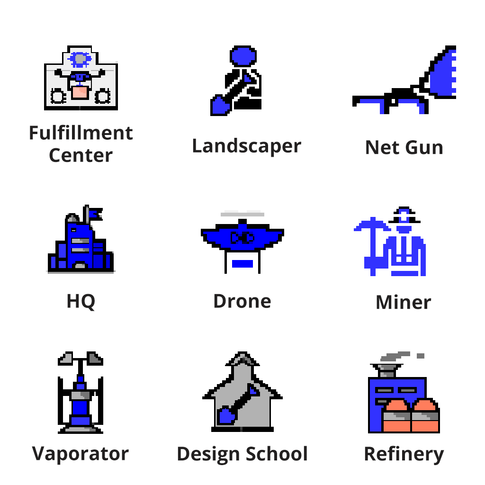
Miners and landscapers are limited in movement as they can't go to tiles with height differences of more than 3, whereas drones can go everywhere.
In particular, landscapers sculpt land by digging up dirt and placing it elsewhere. Landscapers can also destroy buildings by burying enough dirt onto them (15 for all buildings, 50 needed for HQ). Drones can pickup units and drop them off elsewhere (or into the flood to destroy enemy units).
There are also very annoying cows that pollute the land with their gas and raise pollution near them, and pollution causes units to have higher cool downs and thus are unable to perform as many actions such as digging dirt, moving, etc. Pollution also lowers the vision radius of units.
This year also utilized bytecode counting as a computation limit on bots, with different units having different limits.
Communication was all based on "blockchain", where all messages, also known as transactions of 7 integer messages, sent by any unit on any team is appended to an immutable public ledger. Each round, the engine appends the highest bidding 7 transactions onto the block for that round, with the rest of the transactions being stored to potentially be appended in a future round's block in the blockchain.
1.2.2 Points of Interest
Upon talking with (professor) Nate Foss, one of teh devs, the idea of changing communication to this blockchain format where teams had to bid for a message to go through was interesting. It was a step away from previous years where teams were given a big chunk of shared memory, allowing for things such as distributed breadth first searches famously done by Greg McGlynn and detailed here, and a step away from last years communication method where you had to pay resources to send your message farther out. It encouraged more thinking behind communication due to how limited it was, in addition to having to protect your bot from malicious messages from the opponent.
The only pointless part was that the actual bidding didn't prove to be a particularly used part as it was far too costly to employ message flooding strategies where you drown out the enemy with higher bids, so most bots ended up just sending 1 soup cost messages.
Another point of interest was that this year's theme wasn't the usual bots kill bots in all out battle theme (although it ended up becoming that anyway). The names of the units were more neutral and less violent, and teh devs discussed how this was meant to encourage a more inclusive game this year that isn't stereotypically "boyish." I hope this is something that is continued in future Battlecode iterations.
2. The Battlecode 2020 Progression
There were some major time periods in the 22 days or approximately 3 weeks. First days, pre-sprint, post-sprint (so right after sprint), pre-seeding, seeding, pre-qualifiers, post-qualifiers, and then finals.
2.1 First days - Infrastructure
The moment Battlecode 2020 started on January 6th, I opened the specs released and started reading and skimming through the documentation for how to interact with the game engine in Java.
My first impression was, turtling was the easy way to go at first, and so I first programmed a simple turtle bot for the sprint tournament whilst working heavily on bot infrastructure. One of the biggest lessons I learned from the last 2 years is that working on infrastructure first is always much more beneficial and building a working, robust bot, is a priority. This is a message echoed by many other people such as team Big Red Battlecode from their post-mortem last year and team Smite from their post-mortem last year as well. As Smite points out, the code that doesn't change when teh devs rebalance are
"pathfinding, resource gathering, basic communications, and functional attacking code"
Thus, some of the main infrastructure I prioritized setting up was communication methods between my team's units through blockchain, setting up basic bug nav pathing, setting up exploration code for miners so they can search and mine soup and thus gather resources. Importantly, I also began work on custom data structures for bytecode optimization and created a "BFS" delta lookup table for more bytecode efficient searches within unit vision, all discussed more in detail in appendix A.1
(Unfortunately there were bugs in my bug nav that I straight up didn't see until pre-qualifiers)
The meta was not obvious at all and in my opinion remained fairly stagnant amongst majority of competitors early on. This was also a major reason for why successful teams generally focus on infrastructure first before trying out various strategies.
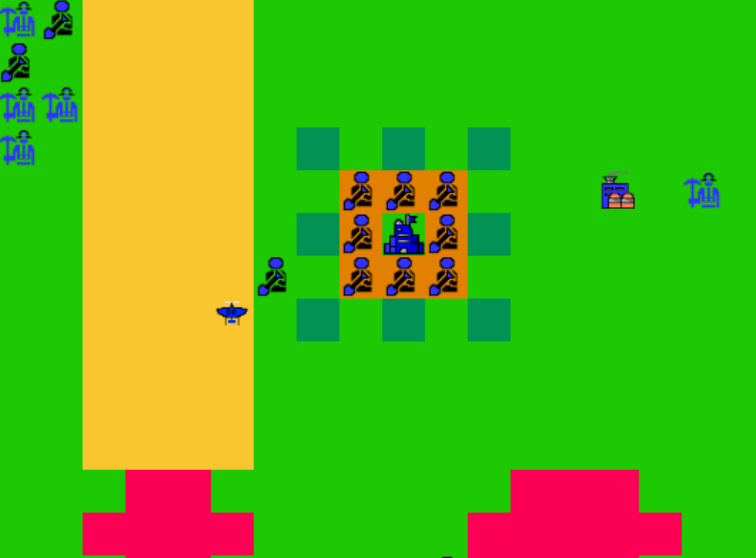
2.2 Pre-Sprint Tournament - Turtles, Lattices, Rushes
I continued to program a standard turtle bot, but with somewhat decent mining code so I could get economy and turtle faster and longer. As each miner unit acts independently of each other and can only communicate through blockchain, I had all miners randomly go to one of five spread out exploration locations to look around for soup as the heuristic of where to explore. Then I originally planned to make it that once the miners reach the exploration location but find no reachable soup, they go on to the next location. However, this proved to be non-trivial as it was difficult to determine if a miner could reach a location of soup. Given the bytecode limits and vision radius, it makes it difficult to perform a full breadth first search (BFS) or A* search algorithm to path properly to locations or determine if said location is unreachable. So instead, my miners spend a number of turns proportional to the distance to the exploration location it is trying to explore before switching locations.
I had a fairly robust bot, it didn't break on the maps given to us by teh devs so I figured this would suffice for sprint and should do ok.
In comes teams Bruteforcer, Super Cow Powers, Baby Ducks, and Battlegaode (3rd)
Battlegaode had a good, simple rush strategy, which was to send a miner straight to the enemy HQ (or look for it first and utilize symmetry of the map to find the HQ faster), build a design school right away, and then build landscapers to then bury the enemy HQ and win. I was not surprised by this strategy at all and their team had this strategy for a few days before sprint and have never strayed away from rushing right away and made finals. Nevertheless, for the time between sprint and seeding, Battlegaode consistently stayed on top and rarely lost (although in one period they stayed up top mostly due to non-optimal match scheduling for ranked scrimmages).
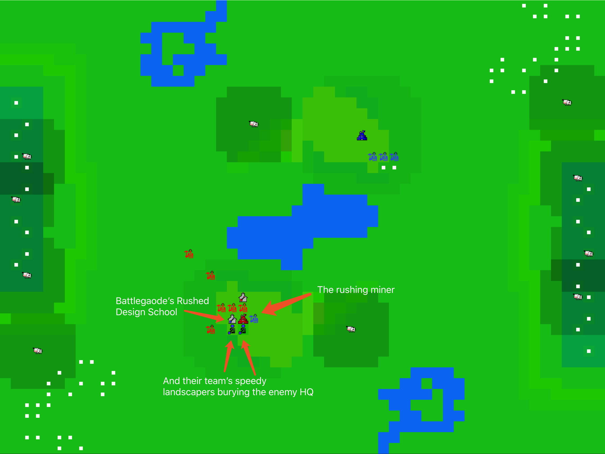
However, Super Cow Powers pioneered the genius strategy of terraforming/lattice, which was followed up by teams Bruteforcer and Baby Ducks. This involved building vaporators early to get a lot of passive soup income, then building a lot of landscapers early and digging out holes at even/odd x, y coordinates and placing dirt in odd/even x, y coordinates to make a lattice.

With this, terraforming teams were able to maintain a good economy and build a lot of drones and landscapers to take down the enemy HQ late game. Most turtles late game don't have an economy anymore because all they did was build landscapers and wall themselves in with a ring of 8 surrounding landscapers.
This culminated in Bruteforcer winning the seeding tournament (congratulations for 2nd year in a row!)
2.3 Post-Sprint Tournament - Rush Rush Rush and Edge cases
Unfortunately, both Bruteforcer and Super Cow Powers could not continue competing in other tournaments because they weren't full-time students. To quote a member from team Smite (2nd), the moment both of those teams left Battlecode,
the meta [shifted] backwards 5 days [and was] equivalent of the dark ages.
This was quite true, few bots soon after were able to transition easily to the terraformation strategy they both employed, and most took the easier route of writing a rush bot, which according to another finalist from team Anomalous Pandas (12th - 9th),
we spend a week coding a bot and we're like 20th place we spend 1 hour coding a rush bot top 10 within 2 hours :/
At this time, it appeared that rush was the clearly superior strategy and had no good/easy defense. Many teams opted to perfect the rush strategy for the upcoming seeding tournament. This was also caused by the spec changes after sprint tournament, which was a nerf on vaporators. Vaporators previously produced 7 soup per round and cost 1000 soup to build. They were nerfed down to 2 soup per round and cost 500 soup to build, effectively making it take longer to earn your soup back. As a result, not that many teams opted to go for the lattice strategy that won Bruteforcer the sprint tournament and rush still prevailed.
I on the other hand firmly believed that defending first would always prevail. Hence ensued several days after sprint of just programming for a rush defense using landscapers to bury the rushed enemy design school and get drones later to pick off enemy units and drown them. This was 100% the wrong way to approach rush defense (drones first was way better and easier), and in the process I just found wayyy too many edge cases to deal with and could not find a simple way to write a more robust and generalized bot to handle more maps. Maps such as these
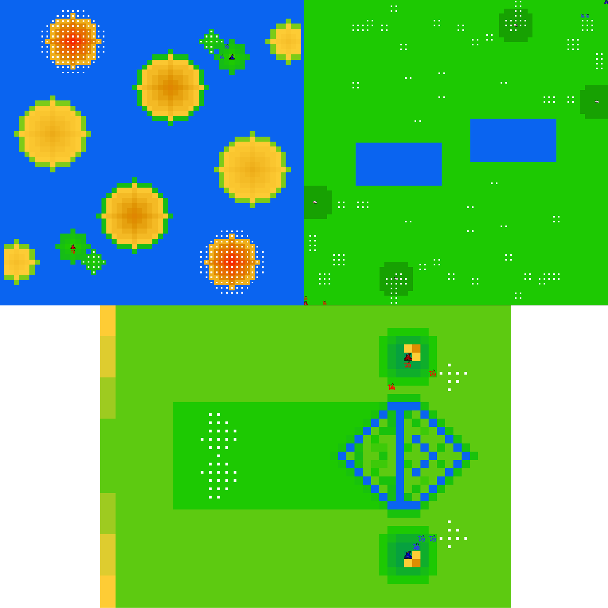
hurt my brain as I tried to generalize my bot and make it more robust to various map situations given the limited vision (bot can't examine the whole map). In particular, a lot of bots broke on the map with the HQ on a corner. This is a big lesson I take from Battlecode and apply to every project I collaborate on now, find all edge cases and make sure they don't crash your project.
2.4 Pre-Seeding Tournament - Rush... sigh
It's at this time, the online ranked scrimmages were showing a clear win for rush bots on most maps that were used for scrimmages. Around then, out of the top 15 ranked or so bots, about 4 of them were non-rush, including my bot. If it isn't clear from the heading above, I disliked rush, like with a passion.
I was happy to see that team NP-ez (12th - 9th), to my knowledge, was the first post-sprint team to start utilizing the lattice strategy, and effectively, whereas I focused on excellent turtling. In addition, teams started to utilize a drone swarm attack, also known as the crunch as labeled by one of the teh devs, or the calculus attack as team Barcode likes to call it. Team Java Best Waifu (of which I will refer to as team Java from now on) was also utilizing the lattice strategy and they did extremely well with it as their lattice was not used just to gain economy, but was used to build towards the enemy and then attack them with masses of units instead of waiting for the flood to decide who wins.
In response to all these rush bots, I programed my bot to start utilizing drones more effectively, using drones to help build the wall by having them pickup my own landscapers and dropping them on the right location on the X wall which involved placing 3 more landscapers at each corner of the 8 landscaper ring around the HQ to add more dirt to the HQ walls to make it last longe. I also began to program the drones to create a drone wall in the late game. The drone wall is essentially placing drones around the landscapers on the X wall protecting the HQ and was meant to protect my base by limiting the number of enemy drones that could go near my HQ at one time and also picking off any units the enemy drops off at my HQ wall.
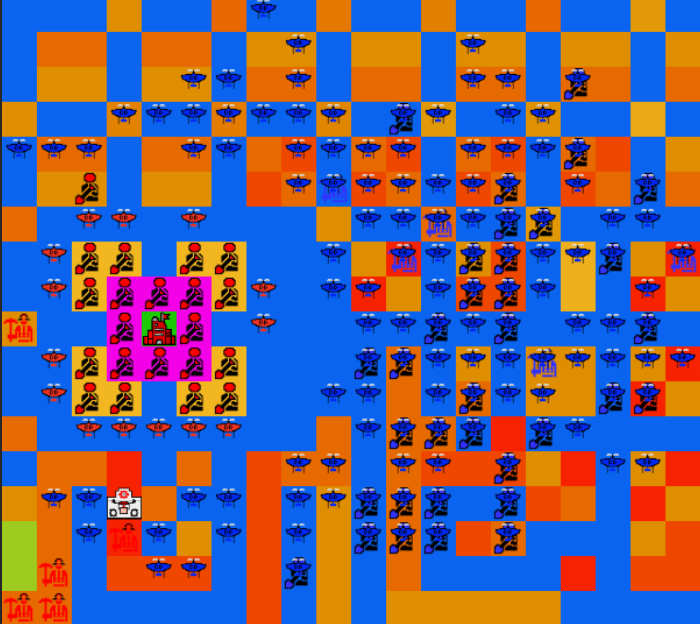
However, this only helped my bot defeat other turtle bots and lattice bots. Rush still remained a problem and I was not alone in asking for a rush nerf of some sort.
2.5 Seeding Tournament - Non-rush prevails
Troll maps. (Troll means absurd/outlandish/meant-to-mess-around-with-your-bot). It's almost like this is always a thing, every tournament in Battlecode teh devs always make edge case maps, in addition to some really cool/interesting ones. Luckily for my team and most other non-rush teams, a lot of these maps were non rush maps, maps where it was difficult for a rush bot to send a rush miner to the enemy HQ in time before the enemy gets their defenses up. Sometimes I feel like teh devs heard our complaints about rush being too powerful, and might've specifically made maps that weren't easy to rush on. In fact, when talking to teh devs at the finalist dinner, they talked about how when they created maps for the tournament, they gave each map a rating on how rush friendly it was, and ensured each seeding round didn't consist of too many rush maps.
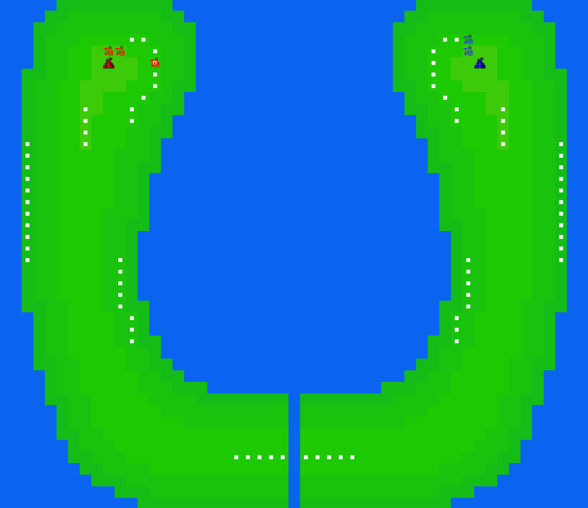
As a result, the non-rush bots ended up placing very high in the seeding tournament, with team Java, my team, and team NP-ez placing 2nd, 3rd, and 5th respectively. Java could've/should've won seeding tournament, but unfortunately were dealt with edge case maps that made their bot perform undesired features such as break a wall that then floods the HQ that was on low elevation. Smite goes on to defeat Java with their rush bot and win seeding tournament, getting first seed for the upcoming US qualifiers.
2.6 Pre-US Qualifiers Tournament - Meta Bloom
This year there was a split between international and US teams where the international teams compete in a separate international qualifiers tournament to decide the top 4 teams that get to go and compete in finals. I have decided to leave this part of the Battlecode 2020 chronology out as I was not involved much (was very busy with events at my school at the time). This is in addition to the fact that a lot of changes occurred after the international qualifiers and before the US qualifiers and the meta truly bloomed quite a lot
2.6.1 Drone Harass
The first major strategy that came up was drone harass. This was extremely powerful and team NP-ez was in fact one of the first to do it as they placed fulfillment centers near enemy units near soup locations that would then make drones that picked up enemy units and drop them into the water, allowing NP-ez to gain early map and resource control. They did this before seeding tournament in fact. However effective this was, it wasn't widely adopted until team Java employed the strategy of building a fulfillment center asap and a drone asap. Not only did this early drone stop incoming rush miners from ever building a design school right next to your HQ, this early drone, coupled with Java's excellent economy and mining, was then combined with even more drones built that then all flew over to the enemy territory and harassed the enemy units.
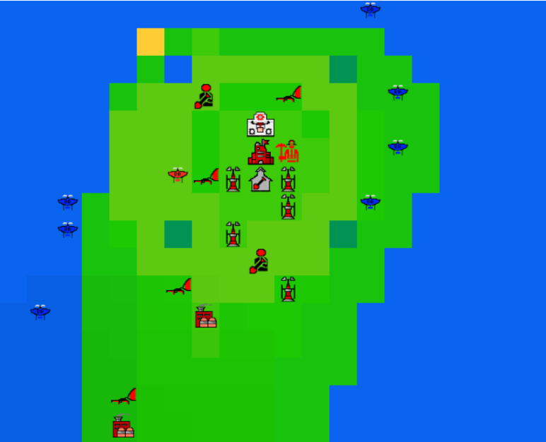
These harassing drones either dropped enemy units into the flood if enemy units didn't run away or build a net gun, or ensured that enemy units had little space to move around as they try to avoid getting picked up and dropped into the flood. In addition, these drones won't stop harassing as the only way to defeat them is to build a costly 250 soup net gun, in comparison to the 150 soup cost drone. Even then, building net guns against a good drone harassment is not that effective as it is easy to avoid the net gun's shooting radius while still seeing where it is and keeping track of where the net guns are.
Eventually the drone harassment will slow the enemy's economy down significantly as it's hard for them to lattice, build a wall or mine. This is all happening while team Java is peacefully building vaporators and terraforming to the enemy HQ to prepare for their crunch.
I still had a turtle + drone wall strategy and decided that lattice + drone harass was better (basically Java's strategy). I wasn't alone as more and more top teams switched over to a lattice of their own kind such as team The High Ground (4th).
2.6.2 Passive Lattice
But through further analysis, I decided that a better strategy was to make a limited/passive lattice. This involved me programming a limit into how big the lattice, or cookie as I like to call it, can be made. My heuristic was to always keep a lattice area of around and to use the HQ as the center of the lattice/circle/cookie. (Note, this number 134 is highly arbitrary). I programmed in methods to also deal with cases when the HQ is near an edge and the radius of the cookie would have to be increased so its area is around the desired area.
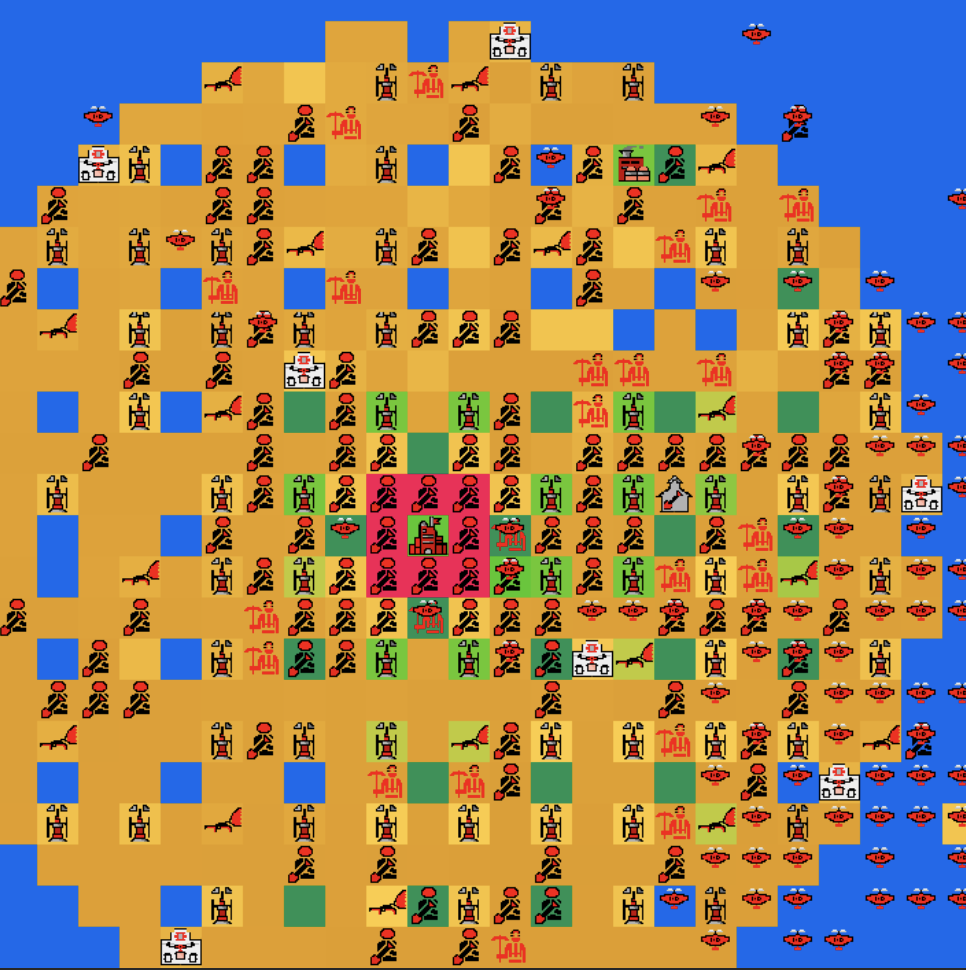
The idea behind my passive lattice was that by limiting the area in which my bot terraforms, my bot ends up still getting a good economy and builds lots of vaporators while also keeping a high elevation lattice. Teams like Java and The High Ground made lattices with fixed heights of around 8. This meant their entire lattice would flood past approximately round 1650 and would destroy all their economy, giving their bots one chance to stop the enemy with their aggressive lattice and drone harass. In comparison, my passive lattice would reach heights way past 8 and would last much longer (given I don't get crunched or harassed to death by the enemy earlier), and gives my bot more time to build units and prepare for its own crunch at around round 1950. Most bots at round 1950 don't have an economy anymore and I leveraged this to take down enemy bots late game and ensure wins.
2.6.3 More effective Drone Wall
The drone wall strategy in my opinion always remained very good. Theoretically pretty easy to beat, but in practice extremely difficult to code a counter against (from my experience at least).
Team Rael Tähvend were the first team I knew of that somewhat consistently formed a drone wall at this time in Battlecode and Smite at this time had also shifted strategies from rush to using a small lattice and a drone wall (similar to my passive lattice but smaller and more defensive). The idea here is that in order to setup a wall for the HQ and defend it with drones, not much soup is required. The bot only has to do a little bit of latticing to build vaporators that won't get flooded, then build a ton of landscapers and drones to make the X wall and the drone wall. With this strategy, Smite spent less soup on building strong, long lasting economy, and spent it all on the landscapers and drones, allowing them to build high walls still like a turtle bot, but also protect themselves from drone crunches as the drone wall leaves no gaps for enemy drones to enter and pickoff landscapers on the walls.
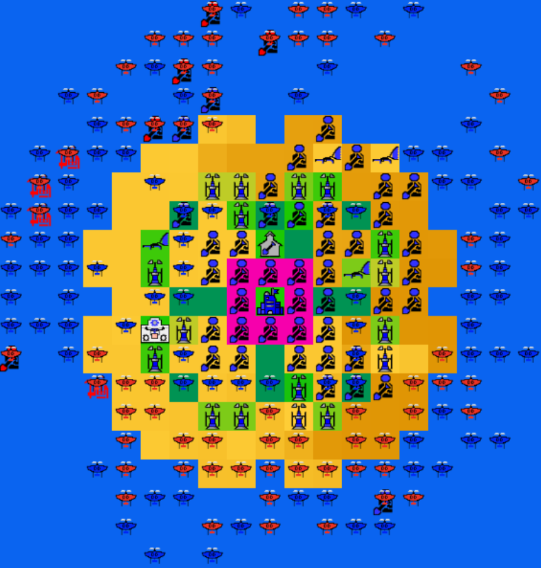
2.6.4 Drone Wall Buster
I spent most of the final few hours before the submission deadline for US qualifiers working on a drone wall buster. As I said, it is theoretically pretty easy to demolish a drone wall when you have resources. The idea is that entering late game, once the bot has enough resources to send relentless attacks on the enemy HQ with drones carrying landscapers and miners, the bot has the drones drop landscapers holding dirt into the water next to the enemy HQ. Landscapers when dropped into the water drop all their dirt as well, effectively allowing my bot to build a temporary island next to the enemy HQ. With this island, I would then drop miners on to it who then instantly build net guns to shoot down the enemy drone wall, allowing for my mass of drones to then pickoff all the enemy landscapers on the walls and put my miners and landscapers on the walls to make more netguns and design schools that then have all the produced landscapers bury the adjacent HQ.
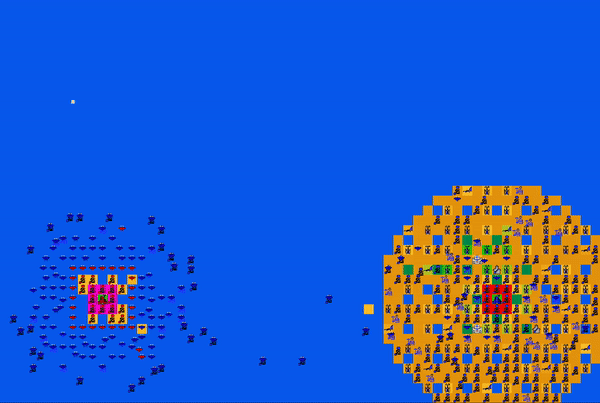
It was a good idea, but the amount of coordination needed and edge cases to deal with was just too much. I ended up making my bot a little worse for qualifiers as I introduced some unwanted bugs. It was just too inconsistent as the island making is already difficult enough given the exponential water level growth and the fact that if the enemy has extra enemy drones, they can pick off the miners being placed on the island. Luckily, not that many bots had code in place to deal with drone wall busts, but this all depends on how the early game pans out and whether my bot could get enough resources to make the cookie.
2.6.5 My thoughts
Coupling the passive lattice strategy with drone harassment, I believed I had achieved a fairly good bot. My conclusion was that theoretically, the strategies from best to worst were as follows:
with the assumption that drone harass is always used. I didn't include rush strategy in here because as time went on, competitors realized the rush strategy is truly dependent on map RNG (RNG is slang for random chance but also is an abbreviation for Random Number Generator). There were some small maps where the HQs were so close that defense against rushes is outright impossible. On larger maps, rushes would never work. At around this time, the best rush bot was team Kryptonite (8th - 7th) who had an effective rush that was always able to prevent early drones from picking up the miner through kiting drones, using the drone to hold the miner until its safe, amongst other rush strategies. It actually made their rush a lot more interesting to watch and learn about. In particular, Kryptonite main strategy was more of to rush and hijack the enemy base, and make it difficult for the enemy to turtle given that rush may not always work. This led to an interesting match in finals where they did indeed hijack the enemy base with their own landscaper, but their own landscaper likes saving itself and ended up building a wall for the enemy.
However, due to a lack of time, there were some fairly important features I was unable to include that lost me some games. One of which is more optimal drone harassment and early economy. Every time I face The High Ground or Java, I always end up falling behind in economy early on and as a result, the enemy has more drones and harasses me to death before I can build up my own lattice and long term economy. Another issue is that my landscapers always tried to build the same fixed area of , which isn't ideal in maps with low amounts of soup. Low soup meant I can't get enough vaporators and thus in the long run I didn't have enough soup to get enough landscapers to maintain a sizable lattice.
2.7 US Qualifiers Tournament - Bugs!
This was scary for me. Before qualifiers started, I found some major bugs that messed up my bots build logic, causing it to not build enough vaporators for strong mid-late game economy, causing it to build not enough landscapers to maintain a lattice, and occasionally not building a wall near the HQ first to prevent some water accidentally seeping in as my landscapers make the passive lattice. In fact, I was knocked out in the top 8 round because my landscapers were busy terraforming land for the lattice but didn't terraform enough near the HQ, eventually letting water flood into the HQ's space.
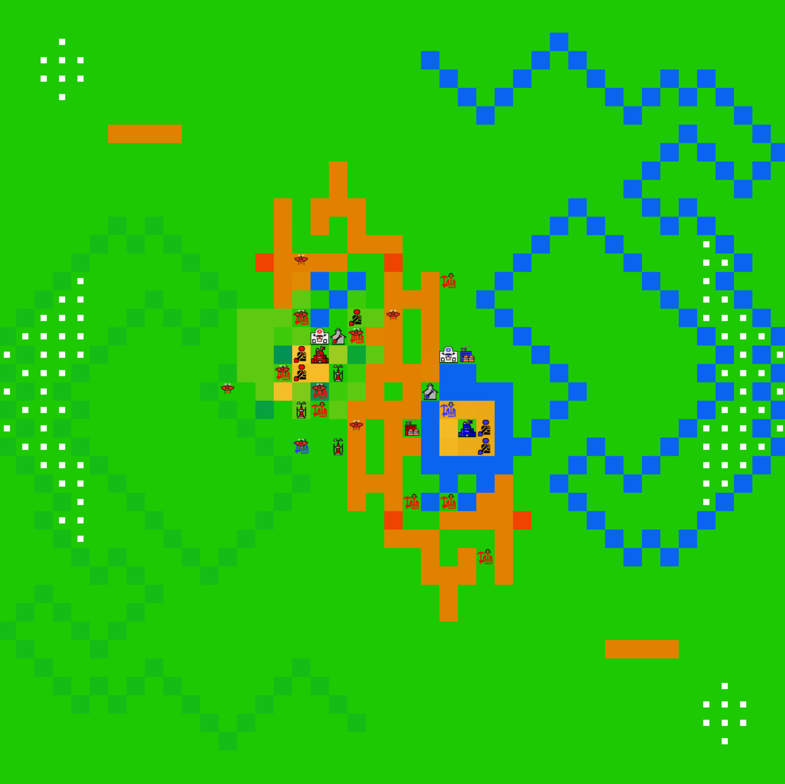
Luckily, my drone harassment saved me as it helped my bot win enough games in the losers bracket to make it to the top 12 of the US qualifiers tournament, sending me to the finals!
I do want to mention that team Chicken and confused deserved to be in finals as well, but unfortunately Chicken didn't have a good seed and made a really good bot (consistently top 8 in rankings) too late into the season and confused was an international team (also consistently top 8 in rankings). Best of luck next year!
2.8 Post-Qualifiers Tournament / Pre-Finals
For the most part, most teams stuck to their own strategies as there was literally about 1 day left before final submissions were due. I focused on making my bot more robust, optimizing bytecode (somehow my drones still go over bytecode), and actually getting a more robust drone wall breaker.
At first, my updated drone wall breaker was successfully breaking team Smite's drone wall on some maps. However, Smite shifted their strategy a bit to include netguns on high dirt around their HQ to protect their drone wall and their landscapers even further, rendering my drone wall buster a little weaker now.
As finals drew near, the finals seeding was finally determined and I was a little unfortunate. teh devs weighted 3 variables, seeding tournament ranking, final ELO rating on ranked scrimmages, and whether or not you qualified through winners or losers bracket. Unfortunately I qualified through losers bracket after a close game against team jenkinsmafia (16th - 13th) that determined who won through winners bracket, and that dropped my final seeding from a potential 4th to 9th.
2.9 Finals
What a final. There was excitement, there were close calls, there were strategies galore.
Im surprised that my drone wall buster actually worked once, defeating team Blue Dragon (16th - 13th). Afterwards, it bugged out as expected and couldn't break thicker drone walls put up by team Smite. My big cookie was unfortunately no match for Smite's dense small cookie / textured raisin.
There were some very close games, with smite winning a game by a single round to enter the final round to face team Java.
There were also some interesting matches, in particular the matches between teams Prasici (12th - 9th) and Steam Locomotive (16th - 13th) where Prasici was able to hack Steam Locomotive's communication and tricked Steam Locomotive bot about probably where their own HQ was, causing Steam Locomotive's landscapers to not defend their HQ as a result.
Team Bagger288 (8th - 7th) implemented a strategy where they have a drone carry a miner around their HQ until very late game and once an opponent picks of their wall landscapers, they would place their own miner down to build net guns and stop any possible drone crunch. This almost defeated my bot on two occasions as we battled it out in the losers bracket.
After defeating Bagger288, I had to battle it out against team Smite of which I then lost, achieving 6th - 5th as my final result.
3. Reflection
3.1 On my bot
In hindsight, I should've spent more time tuning my bot instead of attempting to make a drone wall buster. I misjudged how difficult it is too bust drone walls especially when teams such as Smite keep up netguns until late game. One of the major issues plaguing my bot was gaining good relative economy while being drone harassed and I could never get around this, losing me games against The High Ground, Smite, and Java. There were also some major tuning points in terms of build logic for when to build vaporators and drones that could have been better. But again, this is in hindsight and hindsight is always 20/20
Most likely the next time I do Battlecode, I'm going to place a stronger emphasis on infrastructure and go a little slower before adopting a meta and sticking to it mostly. Having had started out with a pure turtle meta with landscaper defense vs rushes wasted a good amount of time as I switched to the lattice meta.
3.2 On Battlecode
This was by far the best designed Battlecode and best infrastructure of the past 3 years I have competed in it. There was a single spec change that occurred right after sprint and that was it, accentuating how solid the design was in the first place.
The infrastructure was great. For one, ranked scrimmages worked, the website was great, and it was easy to setup for every competitor without as many issues encountered with transpilation in 2019 or docker hell in 2018.
A huge thanks to team Barcode for helping so often in discord to answer people's questions before teh devs had time to do so. Thank you again to all the developers and all the people who competed at finals and make finals possible. I'd love to make finals again to meet and talk to you all again an discuss everything from our bots to topics on AI to how juggling might be a sign of too much time and boredom.
I'm excited to see where Battlecode goes next year and how future iterations will look like!
4. Some Stats
Here are some stats about my code as generated by CLOC (Count Lines of Code):
-------------------------------------------------------------------------------
Language files blank comment code
-------------------------------------------------------------------------------
Java 14 481 796 4577
JavaScript 1 0 0 41
-------------------------------------------------------------------------------
SUM: 15 481 796 4618
-------------------------------------------------------------------------------
(The javascript comes from appendix A.1, where I detail about searching and finding things in bot vision)
Some stats according to GitHub
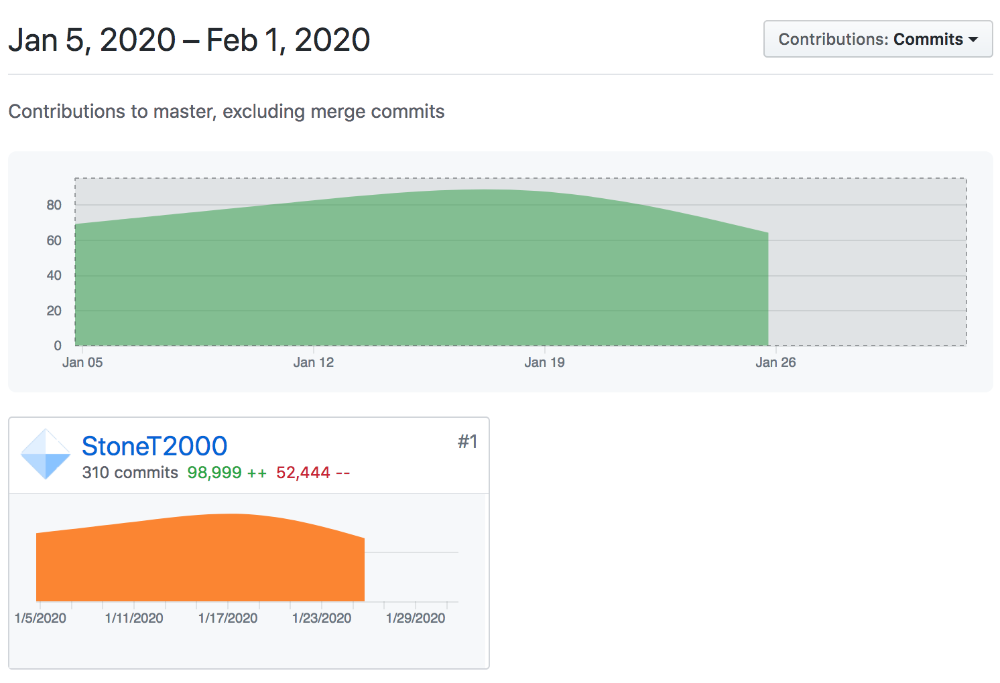
98,999 lines were added and 52,444 lines were deleted (pretty inaccurate given that I copied and pasted my bot to other folders for backup/fallback bot)
Appendix A: Technical Details about my Bot
A.1 Searching and finding things in vision
I often needed to find the closest object, whether it be the closest soup tile, closest water tile for drones to drop units into, or the closest friendly landscaper to pick up and put onto the wall. Breadth First Search is a common search algorithm for finding the closest things in a graph, or in this case, a grid map where tiles are nodes and adjacent tiles are connected by edges.
Your typical BFS of a grid involves keeping a queue of tiles to check, and then for tile you check you store that checked tile into a visited set, then you add neighboring tiles that have not been seen yet to the queue. This requires the use of a queue and a set data structure. Given the bytecode limits, a real BFS costs way too much. So I opted to utilize a lookup table to simulate a BFS.
In particular, I created a javascript function, in src/Chow10/generateBFSDeltas.js, that would generate all the deltas in the order of a BFS and stored into a fixed array. These deltas represent the change in x and y coordinate from a position x_0, y_0 and effectively represent relative coordinates. As a result, the closest relative coordinates are stored towards the front of the array and the farther ones are stored towards the back. I stored this in a constant and this allowed my bot to easily search every tile in its vision by looping through this array of BFS deltas without much computation and also determine the closest object without needing to measure the distance all the time.
As a note, switch statements have low bytecode overhead and Team Barcode supposedly used a switch statement to do pathfinding and searches somehow. Check out their code here to see how they did it. (As of now, I don't have a link to their code)
A.2 Custom data structures
Java's own data structures like ArrayList, HashSet, LinkedList and so forth are all well designed and use inheritance heavily to enforce polymorphism and error checking amongst other features of object oriented design. However, the amount of indirection and layers between a call to say list.add(3) to actually adding the number 3 to the list is too much and causes a lot of bytecode overhead. As a result, I opted to create my own LinkedList for dynamic sized lists and HashSet (It's called HashTable in my code but I ended up making it into a HashSet and never bothered to rename it, so for clarity I call it MySet below).
For reference, consider the following code
import java.util.HashSet; // java's HashSet
import Chow10.util.MySet; // my implementation of the set
import battlecode.common.* // import battlecode things such as MapLocation
...
HashSet<Integer> javaSet = new HashSet<>();
MySet<Integer> mySet = new MySet<>();
MapLocation myLoc = new MapLocation(0, 50);
javaSet.add(myLoc);
mySet.add(myLoc);
javaSet.add(134) according to the Battlecode engine took about 161 bytecode
mySet.add(134) according to the Battlecode engine took about 65 bytecode.
So clearly, my own implementation has a lot less bytecode overhead and uses about 2.5 times less bytecode. This is mostly due to the fact that my own set and lists don't need to be as generalizable as the java HashSet or LinkedList, and there are less "safety checks" as I can just assume whenever I am using it in my bot, I am using it correctly.
This helped my units stay under the bytecode limit for the most part. (My drones ended up going over as I added more and more code to improve them and I lacked the time to comb through the code again to optimize the bytecode better).
A.3 Organizing a drone wall buster
This is hard to coordinate. With lack of global information, I relied on redundancy and many messages to ensure the drone wall buster worked in the right order and the right way. The key component is ensuring certain signals reach out to certain drones and using the HQ as a command center to give out these signals.
To be honesty, I'm pretty sure there is a more efficient, and less spaghetti-code like way of doing this, but when Battlecode gives you 22 days to build a bot, that's pretty hard to come up with.
The Blockchain Transactions/Messages
The drone wall buster involved me adding about 12 different types of messages to be appended to the blockchain, namely:
static final int ATTACKED_ENEMY_WALL = 34;
static final int NO_LANDSCAPERS_LEFT_ON_ENEMY_HQ = 35;
static final int BUILD_ISLAND = 36;
static final int FOUND_LANDSCAPERS_ON_ENEMY_HQ_AGAIN = 37;
static final int PLACED_NETGUN = 38;
static final int LANDSCAPER_DRONES_SWARM = 39;
static final int MINER_DRONES_SWARM = 40;
static final int ONLY_DRONES_SWARM = 41;
static final int STOP_LANDSCAPER_DRONES_SWARM = 42;
static final int STOP_MINER_DRONES_SWARM = 43;
static final int STOP_ONLY_DRONES_SWARM = 44;
static final int RECALL_ONLY_DRONES = 45;
ATTACKED_ENEMY_WALL was a message sent by drones, landscapers, and miners telling my HQ and other units that they were successful in getting near the enemy HQ.
NO_LANDSCAPERS_LEFT_ON_ENEMY_HQ was a message sent by drones telling my HQ that there were no landscapers left on the enemy walls, which meant that my units should be safe to swarm in and crunch as we broke through the drone wall successfully and got all the landscapers off.
BUILD_ISLAND is an message sent when drones trying to crunch at first can't get close enough to actually pick off any enemy landscapers (and thus can't send ATTACKED_ENEMY_WALL). So, if the drones are unable to attack the enemy wall within 15 rounds (a limit which is then increased later on future attempts to attack), then they send a message to ask everyone to build an island as clearly if we can't attack the enemy wall, it is likely we need ground support from netguns to break open the enemy drone wall.
PLACED_NETGUN is a message to tell the HQ that a net gun was successfully placed, which means that it is now possible to charge in as this net gun will shoot down the enemy drone wall and also protect some of my own miners and landscapers I might drop on to the enemy wall.
LANDSCAPER_DRONES_SWARM, MINER_DRONES_SWARM, ONLY_DRONES_SWARM are messages sent by HQ telling drones to swarm and crunch in, depending on if they hold landscapers, miners, or nothing. Likewise, prepending STOP_ to these variables gives you the signal numbers for messages sent by the HQ to tell these drones to stop crunching in.
These 6 signals are used a lot by the HQ to coordinate the attacks and ensure units are not wasting time trying to attack a drone wall that hasn't been broken yet, or running into the HQ without a landscaper or miner to attack the HQ when there are no landscapers left on the enemy HQ wall.
Finally, RECALL_ONLY_DRONES recalls only the drones back to the HQ to pick up units such as landscapers and miners for another attack.
Island Building and Drone Busting Logic
I originally planned on calculating a optimal place to place the island and net guns depending on how thick the enemy drone wall is, but didn't have the time to do so. So for a simple solution, I have all units try to build the island at about 6 tiles away from the enemy HQ in the direction of my own HQ.
Drones would only pick up landscapers with at least 20 dirt on them to then drop it on the island location, who would then attempt to terraform if still alive. Drones with miners would then find an empty spot on the island that was not adjacent to an enemy drone and was safe and had adjacent buildable land. Miners dropped near the HQ would instantly build netguns if there were no netguns close to them and then build design schools if adjacent to the HQ.
The netguns would then destroy a part of the drone wall, miners would also message the HQ of the existence of the net gun, in turn making the HQ tell all drones with miners and landscapers to start crunching in.